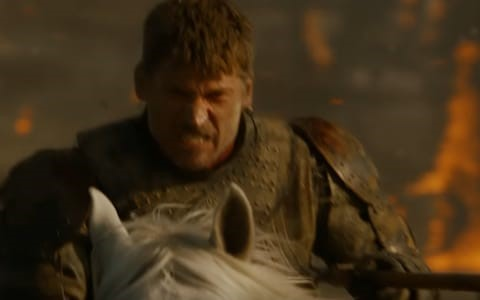

"Kingslayer" Jaime cut down Aerys II Targaryen before he could destroy King’s Landing with Wildfire. Jaime is mercurial and self regarding though with a sense of honour, as demonstrated when rescuing Brienne of Tarth from a bear fight. He was much diminished when he lost his hand to soldiers of House Bolton. He remains by Cersei’s side and nominally loyal – though clearly uneasy about her spiralling megalomania.